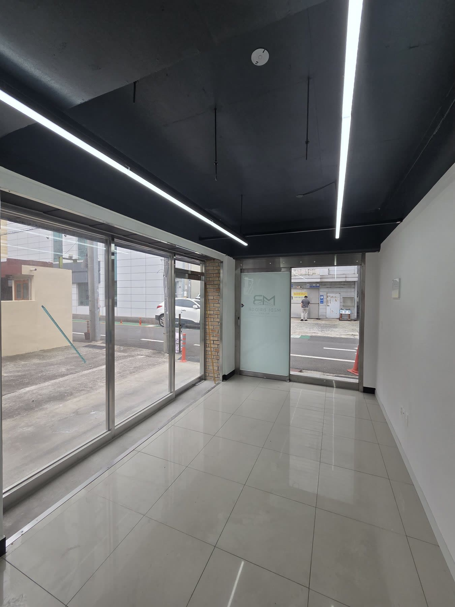
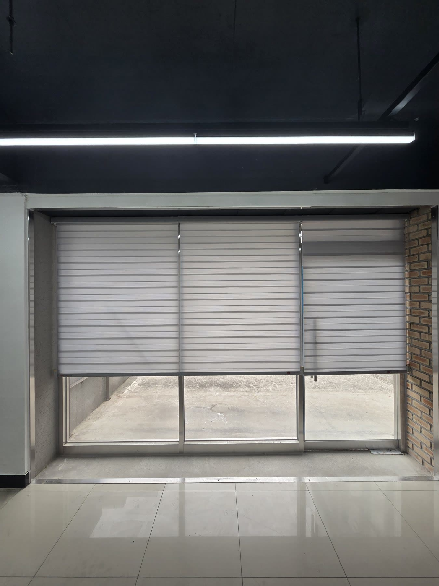
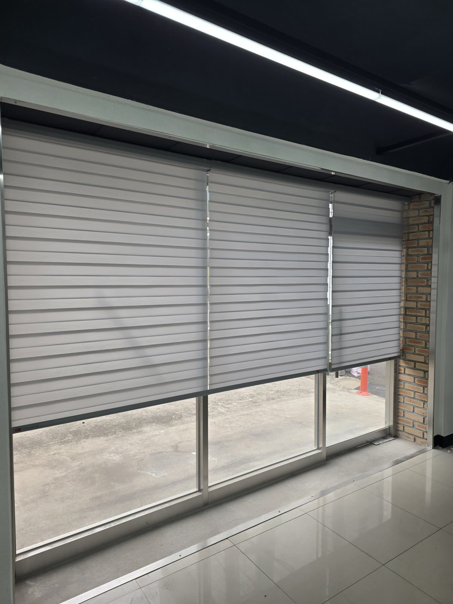
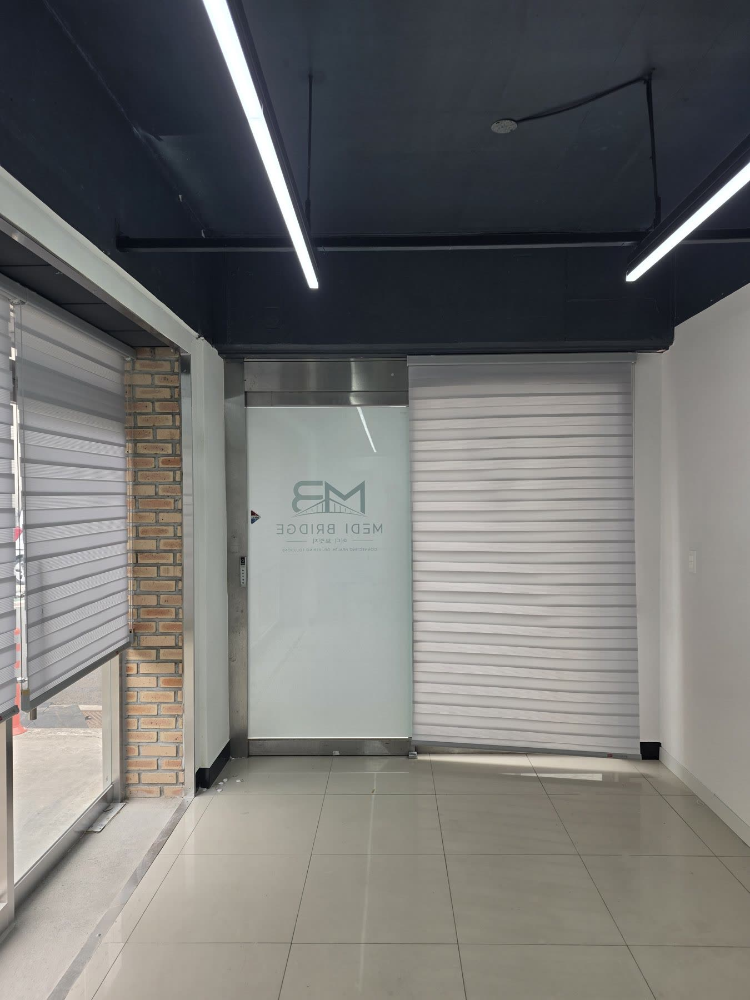

2026년 7월 9일 시공
영천 상가 전면 통창
콤비블라인드 시공후기

영천에 새로 오픈을 준비 중인 도로변 1층 신축 상가에 다녀왔습니다.
가서 보니 블랙 노출천장과 화이트 타일, 벽돌 포인트가 어우러진 미니멀하고 감각적인 공간이었습니다.
도로변 1층이라 통창으로 드는 채광은 큰 장점인데, 그만큼 밖에서 안이 훤히 들여다보이고 눈부심도 만만치 않았습니다.
그렇다고 공들여 잡은 인테리어를 무거운 커튼으로 덮어버리기는 아까운 공간이었습니다.
인테리어를 해치지 않으면서 시선과 눈부심을 잡아 달라는 요청이었습니다.

콤비블라인드가 답이었던 이유
이 조건에 가장 잘 맞는 제품이 콤비블라인드입니다.
콤비블라인드는 불투명한 띠와 비치는 띠가 번갈아 겹친 원단이라, 두 겹을 엇갈리게 맞추면 채광과 시선 차단을 동시에 잡습니다.
비치는 띠끼리 겹치면 빛이 부드럽게 들고, 불투명한 띠를 맞추면 바깥 시선이 막히며, 완전히 닫으면 확실하게 가려집니다.
원단이 얇고 라인이 깔끔해 통창에 시공해도 답답하지 않아, 미니멀한 공간에 특히 잘 어울립니다.
색은 라이트그레이로 맞췄습니다
이 공간의 핵심은 색이었습니다.
블랙 노출천장과 화이트 타일, 벽돌 포인트가 만드는 톤을 살리려면 창 마감이 튀면 안 됩니다.
그래서 라이트그레이 톤의 콤비블라인드로 정했습니다.
블라인드가 따로 노는 게 아니라 원래 공간의 일부처럼 스며들어 정돈되어 보입니다.

대형 통창은 3분할로 나눴습니다
전면 통창은 폭이 넓어 한 장으로 하면 조작이 무겁고 라인도 어수선해집니다.
그래서 창의 분할 폭에 맞춰 3분할로 시공했습니다.
구간별로 따로 조절할 수 있어 실용적이고, 분할 라인이 창틀과 맞아떨어져 정면에서 봐도 반듯합니다.
여러 장으로 나누면 나중에 한 구간에 문제가 생겨도 그 부분만 손보면 되니 유지 관리에도 유리합니다.

상단만 열거나, 전체를 내리거나
콤비블라인드의 또 다른 장점은 상황에 맞춘 조절입니다.
상단만 살짝 내려 시야를 확보하면 바깥 채광과 개방감을 즐길 수 있고, 전체를 내리면 외부 시선과 눈부심을 확실하게 막습니다.
손님 응대나 업무 상황에 따라 그때그때 조절되니 상가와 사무실 공간에 특히 잘 맞습니다.
유리 출입문 옆 라인까지 같은 콤비블라인드로 마감해 정면 전체가 하나의 깔끔한 면처럼 통일됐습니다.
창과 출입구가 같은 톤·같은 제품으로 정돈되니, 이런 통일감이 상가의 첫인상을 한층 단정하게 만들어 줍니다.

관리에 손이 안 가는 것도 장점입니다
콤비블라인드는 평소 먼지떨이로 가볍게 털어주는 것으로 관리가 끝납니다.
손자국이나 얼룩은 물기를 꼭 짠 천으로 살살 닦아내면 되고, 원단이 튼튼해 오래 써도 잘 상하지 않습니다.
손님이 드나드는 상가처럼 관리에 손을 많이 쓸 수 없는 공간에 잘 맞는 이유이기도 합니다.
도로변 통창 상가라 외부 시선과 눈부심이 신경 쓰이는데 인테리어는 살리고 싶으시다면, 콤비블라인드가 좋은 답이 됩니다.
상가·사무실은 영업에 지장 없도록 일정을 맞춰 시공합니다.
영천을 포함한 대구·경북 전 지역 상가·사무실·주택 모두 찾아갑니다.